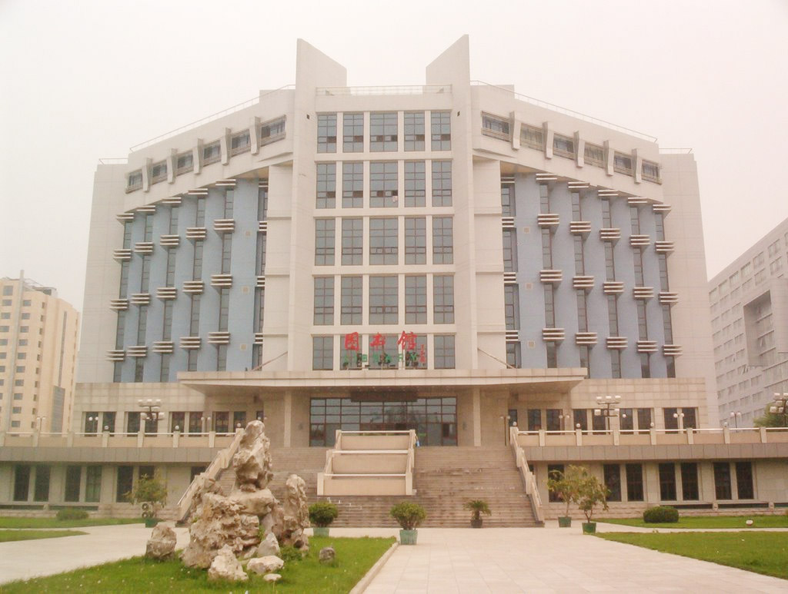

The next workshop of the ICA Commission on Education and Training will take place at Capital Normal University, Beijing, China, Wednesday 10 July to Friday 12 July 2019.

Scheduled to allow for attendees to travel on to the International Cartographic Conference in Tokyo, Japan, the following week, this workshop will address a range of issues related to education in the discipline of cartography and related fields. The suggested topics include the following:
- Integrating cartographic principles into GIS curricula
- Linking cartographic education with education in other geomatics and geospatial sciences
- Experiences in teaching cartography and GIS to non-specialists
- Technical support requirements for academic education in cartography and GIS
- Use of open source software and datasets in geospatial and cartographic education
- Theoretical foundations for the study of cartography
- Curriculum design for GIS and cartographic education
- Development of a ‘Body of Knowledge’ for cartography
- Developing on-line educational resources for cartography and GIS
- Ensuring relevance of geospatial and cartographic education for industry – what do employers want from graduates in cartography and GIS?
- Accreditation and professional recognition of education in cartography and GIS
You are encouraged to consider contributing presentations on these and other relevant issues in Beijing. The intention is that there will be opportunities to deliver full oral presentations, suitable for publication, relating to research and experiences. After discussion, the submission of such presentations to the International Journal of Cartography will be advised.
A significant proportion of the programme will consist of shorter more informal contributions, including posters, to allow for effective discussion and knowledge-transfer. The scope of attendance will be international, and good practice, experiences, and advice will be communicated (the workshop language is English) in formal presentation, discussion sessions, and learning workshops.
The venue, Capital Normal University, is in the west of central Beijing, close to the Central Television Tower and Beijing Zoo. This University area has many hotels close by, is well-connected to the city’s transport links, and is an ideal location for academic, technical and touristic activities.
Further announcements of the workshop will be made on this website, and distributed in other relevant channels: you will have the opportunity to submit contributions and ideas through this site in the near future, and note advice on travel and accommodation opportunities. If you wish to be updated personally, please register your interest by informing the Commission chair, david.fairbairn@newcastle.ac.uk who will also be pleased to receive expressions of interest in contributing to the workshop and developing the agenda further.
Workshop organizers
- Tao Wang, Local Organiser, Capital Normal University, Beijing, China
- David Fairbairn, CET Chair, Newcastle University, Newcastle upon Tyne, UK
- Stefan Peters, CET Vice-Chair, University of South Australia, Adelaide, Australia
Please find more information on the workshop website: education.icaci.org/commission-workshop-2019-beijing